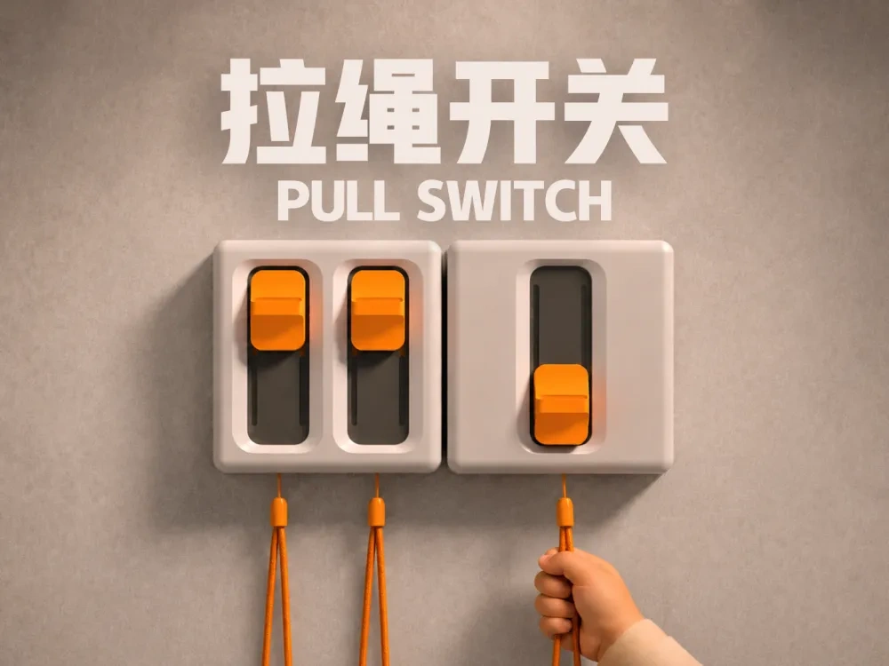
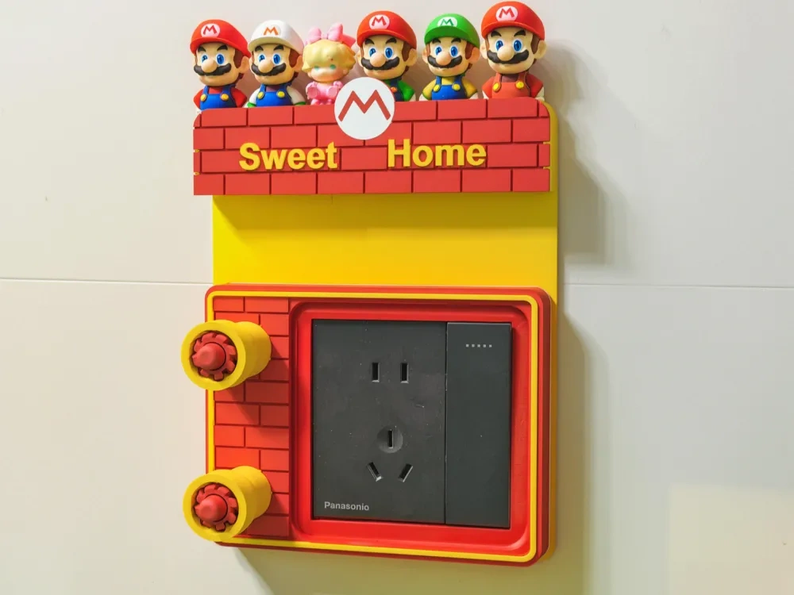
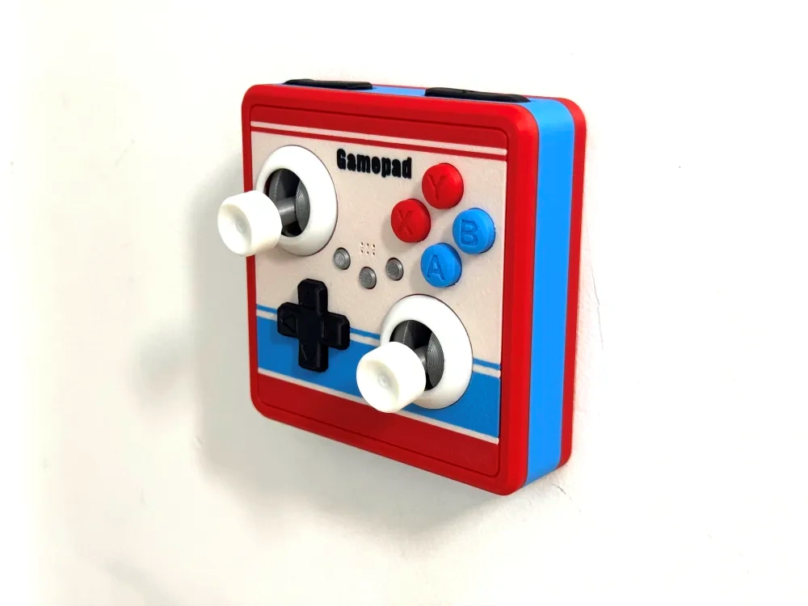
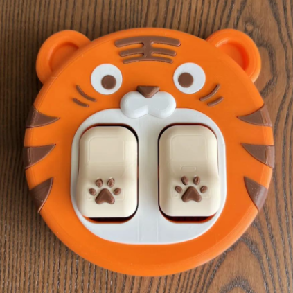
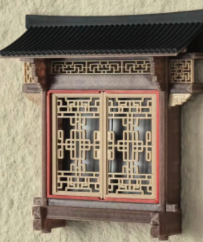

上一阶段
用户需要主动识别情绪状态、选择模式、触发空间反馈，产品更像一台情绪调节设备。
Week 05 / Everyday Emotion Mechanism
这一周把研究从“主动调节情绪”转向“日常使用中被动获得情绪价值”。开灯、插电、开门、挂钥匙这些原本普通的动作，被重新设计成有游戏感、仪式感和反馈感的空间文创产品。

Direction Shift
用户需要主动识别情绪状态、选择模式、触发空间反馈，产品更像一台情绪调节设备。
人在完成开灯、插电、开门等功能动作时，被动获得趣味反馈。产品不询问人的情绪，而是在熟悉动作中自然制造一个愉快瞬间。
Research Trace
插入、旋转、开启，形成最初的触发关系。
一个动作触发状态变化，重点从外形转向机制。
开关、插座、门把手成为新的研究载体。
功能动作产生趣味反馈，情绪被动发生。
统一语言后形成可以收藏、扩展和使用的产品家族。
Core Thesis
第四周解决了制作现场与空间秩序的问题，但第五周发现：仅仅利用空间还不够，产品还需要产生被记住的瞬间。
因此这一周把注意力放在更小、更高频、更容易被忽略的功能界面上。墙面开关、插座、门把手、钥匙挂钩这些东西每天都被使用，却很少被认真感知。它们正适合成为微小情绪介入的入口。
最终目标不是让空间更复杂，而是让原本熟悉的动作多一点期待、满足、参与和记忆。
Design Formula
Carrier Map
按压、拨动、拉动天然具有触发关系，可以被放大成启动仪式。
插入、连接、充能，适合转译为能量补给和状态恢复。
握持、下压、开启，让进入空间像确认一次任务开始。
放置、保存、归位，把回家动作转译为“保存点”。
拉开、合拢、抽取、探索，可以产生揭幕和发现的叙事。
Visual References




Product Family
把普通墙面开关变成可拉动的像素机关。拉杆上推开启、下压关闭，开灯从无意识动作变成一次小型启动仪式。
借用老虎机的期待动作，为氛围灯增加一次悬念。拉动后自动回弹，灯光逐级亮起。
把插电动作转译成给设备“补充能量”。插入后能量刻度逐格亮起，让等待充电变成可感知的恢复过程。
让开门像确认一次“开始任务”。握住并下压，状态窗从待机切换为启动，形成进入新场景的心理切换。
把挂钥匙变成“今天已经安全归位”。钥匙挂入后对应位置亮起，取下后熄灭，与钥匙原题形成闭环。
Launch Set
像素启动器：开灯时获得“我启动了空间”的掌控感。
幸运拉杆：拉灯时获得“这一刻值得期待”的趣味反馈。
能量补给站：插电时看到设备正在恢复能量，产生满足感。
CMF And Manufacturing
哑光 ABS / PETG，稳定、耐脏，表达功能结构。
彩色 PETG / TPU 包胶，突出可操作部位与触发状态。
乳白 PC / 透明树脂，形成柔和而克制的光反馈。
弹簧、磁吸、滚珠定位，产生阻尼、确认点与回弹。
Safety Layering
拉杆、旋钮、挂钩、状态窗，负责触摸与观看。
弹簧、磁吸、限位、回弹机构，形成手感与行程。
微动开关、低压继电器、传感器，把动作转成控制信号。
认证开关、插座、电源模块，完成真实通断与供电。
结构可拆卸、模块可替换，方便小批量生产和后续修正。
Week 05 Conclusion
情绪设计不一定要创造新的功能，也可以重新设计那些每天都会发生、却常被忽略的动作。普通界面仍然完成开关、插电、开门和归位，但动作被放大，反馈被设计，情绪在使用过程中自然发生。
最终方向是让功能继续工作，让空间多出一组可触摸、可记忆、可收藏的“日常情绪机关”。
Original PPT
PPT 中包含完整的 28 页推导、参考图、产品家族、CMF 与制造逻辑。网页页面是对其进行汇报型整理后的版本。
打开第五周 PPT 原件参考图片来源于 MakerWorld 网站